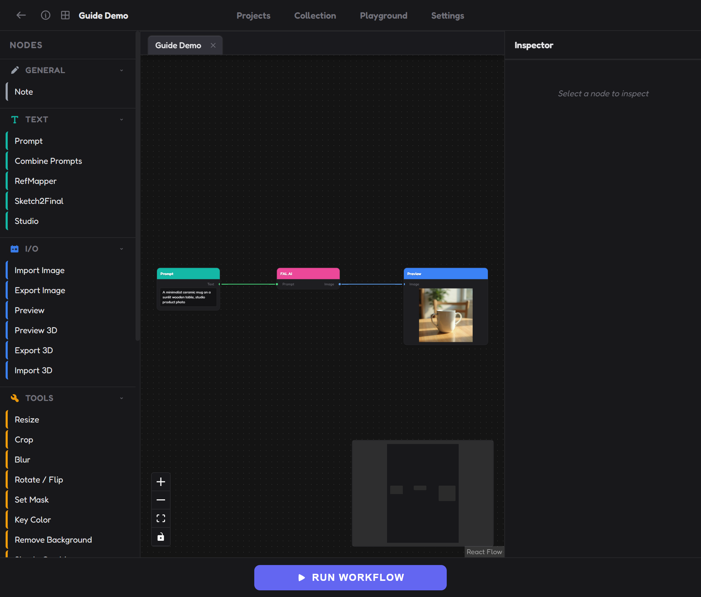
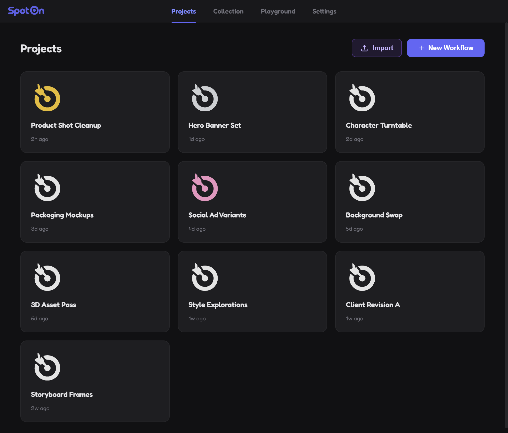
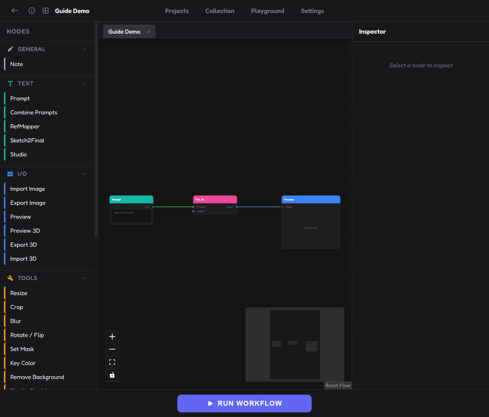
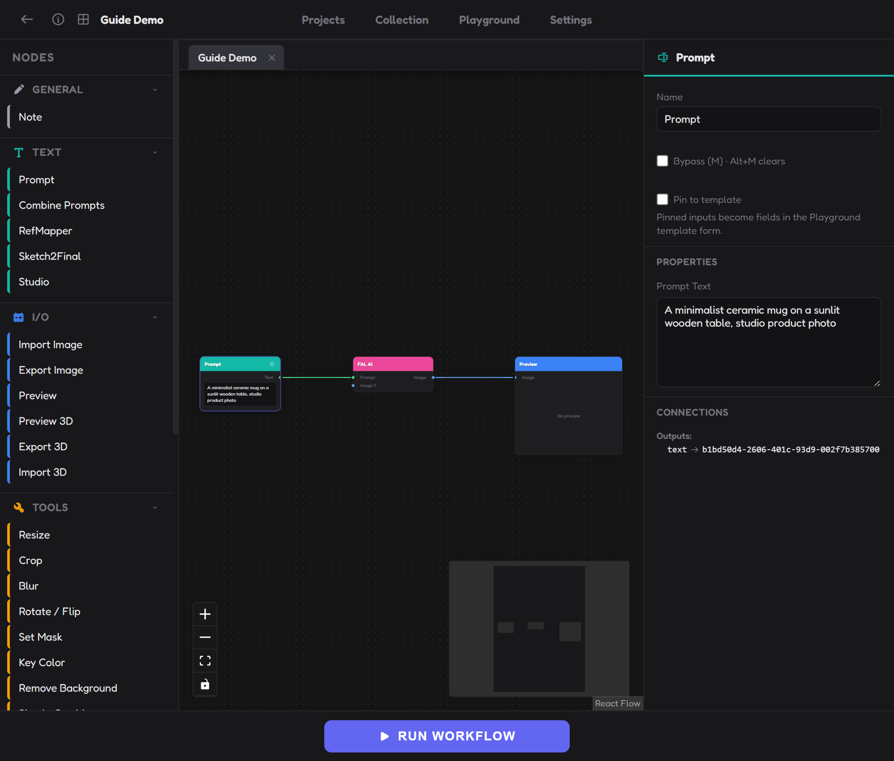
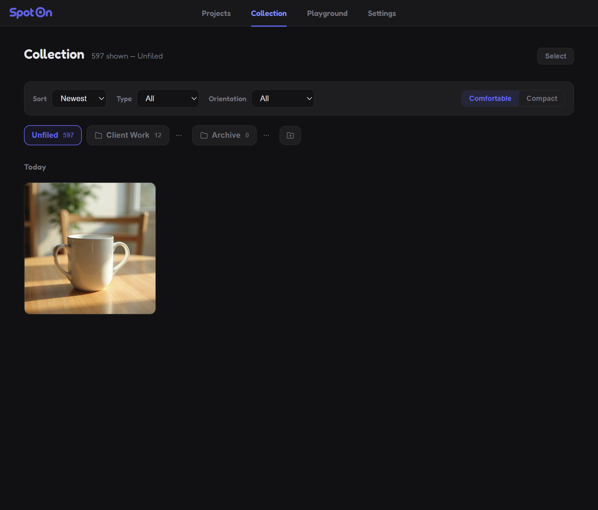
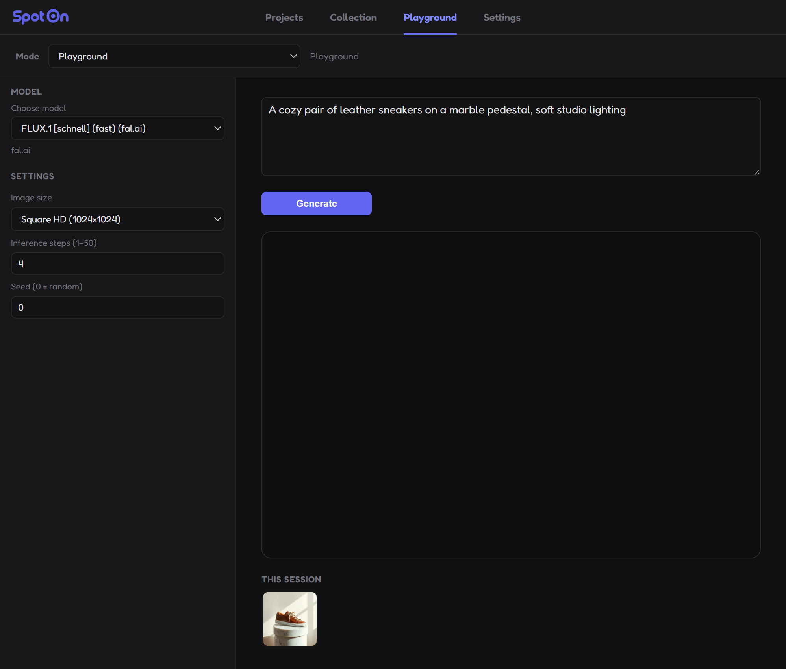
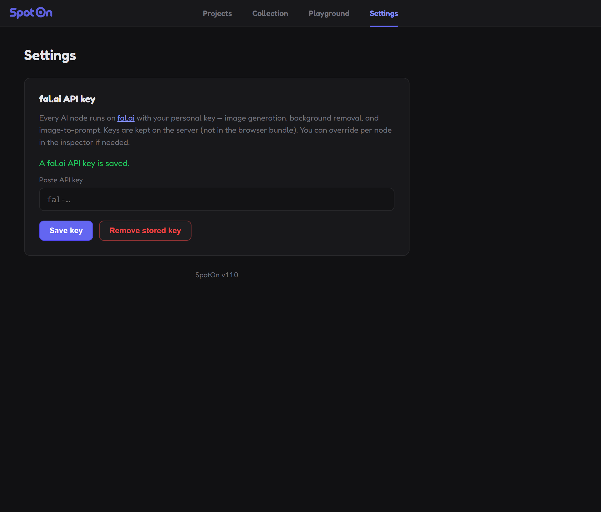
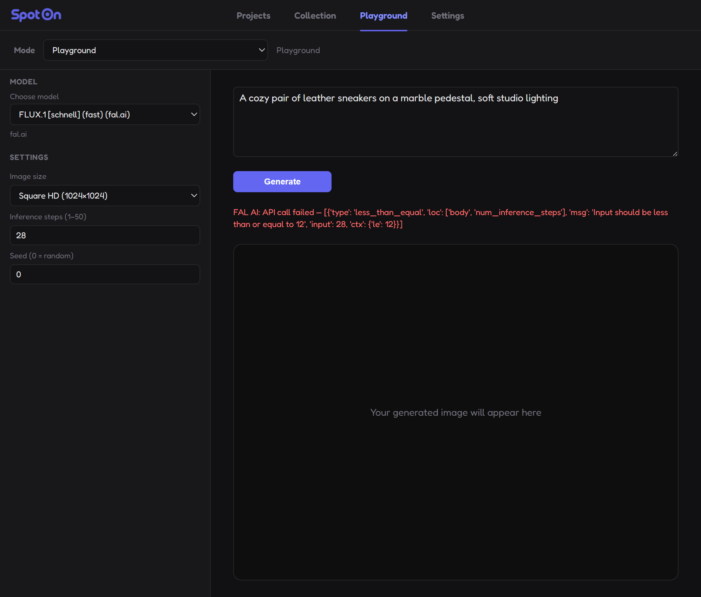

The SpotOn Guide
SpotOn is a node-based editor for generating and editing images — and turning images into 3D models — without writing code. This guide covers the interface, every tool, and the questions that come up most.
Welcome
A quick orientation before you dive in.
SpotOn works like a flowchart for images. You drop nodes onto a canvas — a prompt, an AI image generator, a crop, a preview — and wire them together by dragging from one node's output to another's input. Press Run, and SpotOn walks the graph from left to right, sending each step to the right place and streaming results back live.
It's built for repeatable work: build a pipeline once, then reuse it, tweak it, or hand a simplified version of it to a teammate through Playground. Everything you generate is automatically kept in your Collection, and everything you build lives entirely on your own machine — SpotOn itself stores nothing in the cloud.
5-minute quick start
The whole SpotOn loop, start to finish: type an idea, wire it up, and watch it render.
- Open a workflow. Projects is the home screen. Click + New Workflow, give it a name and a color, and hit Create.
- Look around. You land in the editor: the Nodes palette on the left, the canvas in the middle, the Inspector on the right, and the Run bar along the bottom.
- Add a Prompt. Drag Prompt from the Text category onto the canvas. Click it, then type a short description in the Inspector on the right — for example, "a minimalist ceramic mug on a sunlit wooden table, studio product photo."
- Add FAL AI. Drag a FAL AI node (AI Models category) next to it. Drag from the Prompt node's output dot to the FAL AI node's Prompt input dot to wire them together.
- Add a Preview. Drag a Preview node (I/O category), and connect FAL AI's Image output into it.
- Run it. Click RUN WORKFLOW at the bottom. SpotOn sends the job to fal.ai and the result streams straight into your Preview node.

That's it — that three-node chain is the backbone of almost everything you'll build in SpotOn. Everything else in this guide is really just more nodes bolted onto that same idea.
Interface tour: Projects
Projects is where every workflow you build lives. Each card is one workflow — click it to open the editor, or use the small icons on a card to export it as a file, view its details, or delete it. Double-click a card's name to rename it right there.
Use + New Workflow to start from scratch, or Import to load a .blpw workflow file someone shared with you.

The workflow editor
Open any workflow and you get three columns:
- Nodes (left) — the palette of everything you can place, grouped into collapsible categories. Drag any item onto the canvas.
- Canvas (middle) — where you arrange and wire nodes. Scroll to pan, pinch or use the zoom controls in the bottom-left corner (+, −, Fit View).
- Inspector (right) — shows the fields for whichever node you've selected. Nothing selected? It just says so.
Along the top: a back button, a description toggle for notes about the workflow, a Set template button (see Templates & pinning), and a tab strip if you have more than one workflow open. Along the bottom: the big RUN WORKFLOW button, which turns into STOP while a run is in progress.

The Inspector
Select any node and the Inspector shows, from top to bottom:
- Its Name — editable, purely a label for you.
- Bypass — a checkbox (shortcut M) that skips the node during a run and passes its input straight through.
- Pin to template — a checkbox (shortcut P) that exposes this node in Playground. See Templates & pinning.
- Properties — whatever fields that specific node type needs: a prompt box, a model dropdown, width/height, a color swatch, and so on.
- Connections — a plain-language list of what's wired into and out of the node, handy for untangling a busy graph.

Collection
Every image an AI node generates, and every model that comes out of Image to 3D, is saved here automatically — you never have to remember to keep anything. Items are grouped by date and can be sorted, filtered by type or orientation, switched between a comfortable or compact grid, and organized into your own folders.
Click any tile to open it full-size, where you can see the prompt, seed, and model that produced it, copy the image to your clipboard, download it, or delete it.

Playground
Playground is the fast lane: pick a fal.ai model, type a prompt, adjust size/steps/seed if you like, and click Generate — no canvas, no wiring. Everything you make here lands in Collection just like a workflow run does.
The Mode dropdown at the top also lists any workflow you've turned into a template. Switch to one and Playground becomes a simple form built from whatever nodes that workflow's author pinned.

Settings
This is where you paste and save your fal.ai API key — the one thing every AI node needs. Settings tells you plainly whether a key is saved, or whether it's being supplied by an environment variable instead, and shows the installed app version at the bottom.

Core concepts: Nodes & connections
Every node has small colored dots along its edges called ports — outputs on the right, inputs on the left. Each port carries one kind of value: image text number color boolean 3D model — plus a flexible any type that fits everywhere. Drag from an output dot to a compatible input dot to connect them; SpotOn simply won't let you connect two ports whose types don't match, so there's nothing to get wrong here.
Only nodes that are actually wired into the graph do anything during a run — an unconnected node just sits there and is skipped (the one exception is a Note, which never runs at all, connected or not).
Running & stopping
RUN WORKFLOW sends your graph to the backend, which works through it node by node and streams each result back live — you'll see nodes complete in real time rather than waiting for the whole thing to finish silently. Click STOP at any point to cancel a run in progress.
Bypass
Select one or more nodes and press M to bypass them — SpotOn skips that step during the next run and simply passes its input straight through, so you can A/B a step without deleting it or rewiring anything. Press Alt+M to clear bypass again.
Groups
Select a few nodes and press Ctrl+G to draw a labeled frame around them. Groups get their own small Play button in the corner of the frame, so you can run just that piece of a larger graph while you're testing it.
Notes
The Note node is just free-form text on the canvas — a reminder to yourself, a label for a section of the graph, whatever you like. It has no ports, never runs, and is completely ignored by the engine.
Templates & pinning
Pinning turns a workflow into a simple form that anyone can use from Playground, without ever opening the node graph.
- Check Pin to template on an input node (press P) — a Prompt, Import Image, Number, Color Picker, or an AI node's own fields — and it becomes a field in the Playground form.
- Pin a Preview or Export Image node and it becomes the result panel instead.
- Tools and Read Data nodes can't be pinned — they're internal plumbing, not something a template user should have to think about.
Once at least one node is pinned, click Set template in the top bar of the editor and give it a name. It now shows up as its own mode in Playground's dropdown, right alongside the default Playground mode.
Saving & autosave
SpotOn saves your workflow automatically a few seconds after you stop editing, and immediately the moment you navigate away. There's no save button, and no risk in clicking around to explore.
Import & export files
Any workflow can be exported to a .blpw file from its card on the Projects page, then imported again — on your own machine as a backup, or on someone else's to share the whole graph. This is a different thing entirely from the Export Image and Export 3D nodes, which write the images or models a workflow produces, not the workflow itself.
Recipe: Your first image
This is the exact same three-node chain from the quick start, with a bit more context.
- Drag a Prompt node onto the canvas and describe what you want in plain language.
- Drag a FAL AI node, connect the Prompt's output into its Prompt input, then pick a model in the Inspector.
- Drag a Preview node and connect FAL AI's Image output into it.
- Click RUN WORKFLOW.
Recipe: Editing & compositing
Once you have an image — generated or imported — a handful of Tools nodes cover most editing needs:
- Resize / Crop / Blur / Rotate & Flip — the basics, each with a plain numeric or dropdown Inspector.
- Editor or Compositor — for layered composites. Add the node, then click Open editor in its Inspector to arrange layers visually; SpotOn bakes everything back into that node's single Image output when you close it.
- Remove Background — cuts a subject out with a cloud model. This one runs on fal.ai, so it needs a key and an internet connection, same as image generation.
- Key Color — chroma-keys a specific color out (green-screen style), with a manual mask you can paint in if the automatic result needs a touch-up.
Chain as many of these as you like — each one takes an image in and puts an image out, so they connect in any order that makes sense for your edit.
Recipe: Exporting your work
- Drag an Export Image node and connect up to 24 images into its input slots (use the + in the Inspector to add more slots).
- Set a destination folder, and give each slot its own file name and format.
- Click the Export button inside the node's Inspector.
Recipe: Build a Playground template
- Build a normal workflow — say, Prompt → FAL AI → Preview.
- Select the Prompt node and check Pin to template (or press P). Do the same for any other input you want a teammate to control.
- Select the Preview (or Export Image) node and pin it too — that becomes the result panel.
- Click Set template at the top of the editor and give it a name.
From then on, that name shows up in Playground's Mode dropdown. Anyone can pick it, fill in just the pinned fields, and get your exact pipeline — without ever seeing the node graph behind it.
Recipe: Image to 3D
- Start from any image — imported or generated.
- Connect it into an Image to 3D node and pick a model: Tripo H3.1 for a textured mesh, Hunyuan3D 2.1 for PBR textures, or Hunyuan 3D 3.1 Rapid for a fast, untextured draft.
- Connect its 3D Model output into a Preview 3D node to orbit it, adjust lighting, and check the mesh before exporting.
- Connect that into an Export 3D node and export the finished GLB.
Node reference
Every node currently in the palette, grouped exactly like the Nodes panel on the left of the editor.
General
Note
Free-form text you drop anywhere on the canvas — a reminder, a label for a section of the graph, or context for a teammate. It has no inputs or outputs and is completely ignored when the workflow runs, connected or not.
Text
Prompt
The simplest text node: type into it, and its output is that exact text. Resizable on the canvas so you can see a long prompt without scrolling.
Combine Prompts
Joins two or more incoming text values into one, separated by whatever you set as the separator (a newline by default). Use the + in the Inspector to add more input slots as you need them.
RefMapper
Builds a structured instruction telling an AI model exactly what to take from each numbered reference image — for example, "take the pose from image 1" and "take the color palette from image 2." Useful whenever you're feeding several reference images into one generation and want to be explicit about each one's role, rather than leaving it to guesswork.
Sketch2Final
Adds phrasing that describes a sketch's level of finish (rough or detailed) and whether it's colored, then combines that with any prompt text wired into it — handy for sketch-to-final-image pipelines where you want the model to understand it's starting from a rough drawing.
Studio
Three independent toggles that each add a short phrase to the output: a lens (wide-angle, standard, telephoto, macro), a shot (wide, medium, close-up, extreme close-up, long, arrival), and a view (eye level, low/high angle, bird's eye, or one of six orthographic views for product/3D-style shots). Turn any of the three off if you don't need it.
I/O
Import Image
Pick a file from disk, or simply drag an image file onto the canvas anywhere — SpotOn creates one of these automatically.
Export Image
Set a destination folder and a file name/format per slot, then click Export in the Inspector. Running the workflow alone doesn't write files — see Exporting your work.
Preview
Displays whatever image is wired into it, right on the canvas. Resizable, and this is also the node type you'd pin as a template's result panel.
Preview 3D
Orbit a mesh with a grid floor, adjustable key/fill light and shadow strength, and three display modes: Textured, Wireframe, or Mesh only. It passes the model straight through so it can sit between Image to 3D and Export 3D, and its Image output is a snapshot of whatever's currently on screen in your browser (not computed by the server).
Export 3D
Saves the connected mesh as a GLB file to a folder and file name you choose.
Import 3D
Import a GLB, OBJ, or FBX file. Whatever format you bring in is converted to GLB automatically so the rest of the app only ever has to deal with one format.
Tools
Resize
Set a target width/height, optionally lock the aspect ratio, and choose whether it stretches to fit exactly or fits within the box while keeping proportions (with an anchor point for where it settles).
Crop
Type exact X/Y/width/height numbers, or click Open Crop in the Inspector to drag a crop box directly over the image instead.
Blur
A simple blur with a single radius setting — larger numbers blur more.
Rotate / Flip
Rotate by any angle, and independently flip horizontally and/or vertically.
Set Mask
Uses a second connected image as an alpha mask on the first, with an option to invert it.
Key Color
Pick a key color and adjust threshold/softness to knock it out (classic green-screen technique), with a manual mask you can paint over the automatic result to clean up edges.
Remove Background
Runs a background-removal model on fal.ai — this is the one Tools node that needs an internet connection and an API key, same as image generation. Options include model/operating resolution, foreground refinement, edge feather/erode/dilate, inversion, and filling the background with a solid color instead of leaving it transparent.
Simple Combine
Lays one image over another with an adjustable opacity — the fastest way to composite two images without opening a full layer editor.
Stack Images
Arranges up to 12 images horizontally or vertically into one strip, with an option to stretch them so they all match in size.
Divider
Cuts one image into up to 16 separate output slices, positioned visually in its own editor — the mirror image of Stack Images.
Editor
Click Open editor to arrange a background plus any number of image layers visually, then close it to bake everything into this node's single Image output.
Compositor
Similar to Editor, but built around a fixed canvas size you set up front — good for compositing onto a known output size, like a poster or a specific product-shot canvas.
Vignette
Stack up to four vignette layers, each with its own shape, color, opacity, blend mode, size, and feather — for anything from a subtle photographic vignette to a full stylized frame.
Values
Number
A plain numeric value you can wire into anything that accepts a number — width, height, blur radius, and so on — instead of typing it directly into each field.
Color Picker
Pick a color once and reuse it anywhere a color input is accepted, such as a Key Color node's target color.
Read Data
Get Channel
Breaks an image into its individual Alpha, Red, Green, and Blue channels, each available as its own image output — useful for masking work or channel-based effects.
Get Image Size
Reads an image's dimensions as two Number outputs, so you can feed a source image's size into a Resize node elsewhere in the graph instead of typing it in by hand.
Get Color Palette
Pulls a small palette (5 colors by default) out of an image, giving you both a visual swatch strip and a plain-text list of the colors — handy for matching a brand palette or feeding colors into a prompt.
AI Models
Every node in this category calls out to fal.ai and needs an API key — see fal.ai & API keys.
Image SCF Prompt
Looks at an image and writes a description you can feed into another AI node. Toggle any combination of Style, Content, and Feel to control what it focuses on — great for turning a reference image into words when a model doesn't take images directly.
FAL AI
One node, sixteen models — pick from the dropdown and the node's inputs adjust to match what that model needs. Some take a text prompt only, some take one or more reference images (with or without a prompt), and sizing is controlled either by an image-size preset or an aspect ratio depending on the model.
| Model family | Reference images | Sizing |
|---|---|---|
| FLUX.1 [dev] / [schnell] / 1.1 [pro] / FLUX.2 [pro] | None, or multiple (FLUX.2 [pro]) | Image size preset |
| FLUX.1 [dev] Redux | Required, single (no prompt — pure variation) | Image size preset |
| Stable Diffusion 3.5 Large | None | Image size preset |
| Fast SDXL | Optional, single | Image size preset |
| Nano Banana / Edit / Pro / 2 | None to multiple, depending on variant | Aspect ratio |
| GPT Image 2 | Multiple | Image size preset (with Auto) |
| Seedream 5 Pro | Multiple | Image size preset (with Auto 1K/2K) |
| Ideogram 4 | Single | Image size preset |
| Recraft V4.1 | None | Image size preset |
| Z-Image Turbo | Single | Image size preset |
As a rule of thumb: "fast" or "turbo" variants render quicker and cheaper but cap some settings lower; "pro" variants cost more and generally give you finer control and quality.
Image to 3D
Converts a single image into a 3D mesh. Three models to choose from:
- Tripo H3.1 — textured, with a Standard or Detailed texture quality option.
- Hunyuan3D 2.1 — PBR (physically based) textures.
- Hunyuan 3D 3.1 Rapid — fast, but the result has no textures. It's a good choice for quickly checking a shape before committing to a slower, textured pass.
Upscaler
Connect an image, pick a model and a scale (2x or 4x). Two models to choose from:
- Real-ESRGAN — fast and cheap, no prompt. Good default for photos and general upscaling.
- Clarity Upscaler — slower and pricier, with an optional prompt to steer the added detail. Better for pushing a soft or low-resolution image toward a sharper, more "generated" look.
This is different from the Resize tool: Resize stretches or crops pixels locally and is free; Upscaler runs an AI model on fal.ai to add real detail, and costs money per run.
Shortcuts & tips
| Shortcut | What it does |
|---|---|
| M | Bypass the selected node(s) |
| Alt+M | Clear bypass on the selected node(s) |
| P | Pin/unpin the selected node(s) to the template |
| Alt+P | Unpin the selected node(s) |
| Delete / Backspace | Delete the selected node(s) |
| Ctrl+Z | Undo |
| Ctrl+Shift+Z | Redo |
| Ctrl+A | Select every node on the canvas |
| Ctrl+C | Copy the selected node(s) |
| Ctrl+V | Paste — pastes copied nodes, or an image from your system clipboard as a new Import Image node |
| Ctrl+G | Group the selected nodes |
| Ctrl + drag on empty canvas | Scissor-cut any connection lines the drag crosses |
| Alt + drag a node | Duplicate it in place, leaving the original behind |
| Drag an image file onto the canvas | Creates an Import Image node automatically |
A few extra habits worth building:
- Use Bypass instead of deleting a node when you're comparing two versions of a step — it's one keypress to toggle back.
- Group a section of a large graph so you can re-run just that piece while you're tuning it, instead of the whole workflow every time.
- When a fal.ai call fails with a message about a parameter being out of range (like inference steps), it usually means the model you picked caps that setting lower than the one you were using before — just lower the value and try again.
fal.ai & API keys
Every AI node — FAL AI, Image SCF Prompt, Image to 3D, Upscaler, and the Remove Background tool — runs on fal.ai, not on your computer. Each one needs internet access and an API key to work.
- Ask whoever manages your studio's fal.ai account for your personal key, from their Dashboard → Keys. It's shown to them only once, at creation.
- Open Settings and paste it into the field, then click Save key.
The key is stored on the backend (never in the browser) and is only ever sent to fal.ai. If more than one key source is present, SpotOn checks them in this order: a key typed directly into a node's Inspector, then the key saved in Settings, then a FAL_KEY environment variable as a last-resort fallback.
Your data & privacy
SpotOn runs entirely on your own machine (or your studio's own server) — the app itself doesn't store anything anywhere else. Everything it writes lives in one folder: %APPDATA%\SpotOn.
| Path | Contents |
|---|---|
spoton.db | Your workflows, Collection metadata, and saved API keys |
collection/ | Every image SpotOn has generated |
uploads/ | Images you've imported |
models/ | Generated 3D meshes |
exports/ | Where Export nodes write by default |
Back up that one folder and you've backed up everything — every workflow, every generated image, and your saved key. Nothing leaves your machine except what an AI node explicitly sends to fal.ai to do its job: the prompt text and any reference image you've wired into it.
Troubleshooting & FAQ
My Export Image node didn't create any files — why?
An AI node fails with an authentication or quota error.
An old workflow has a node like "Nano Banana Pro" that won't run.
A generation failed with an error about a setting like "inference steps."

Why does SpotOn need an internet connection at all?
The console window closed, or I see "Cannot reach the SpotOn server."
Port 8000 is already being used by something else.
SPOTON_PORT environment variable if you want to choose a specific one yourself.Does uninstalling delete my workflows and images?
%APPDATA%\SpotOn is deliberately left alone, so a reinstall or an upgrade never loses your work. Delete that folder yourself if you genuinely want it gone.